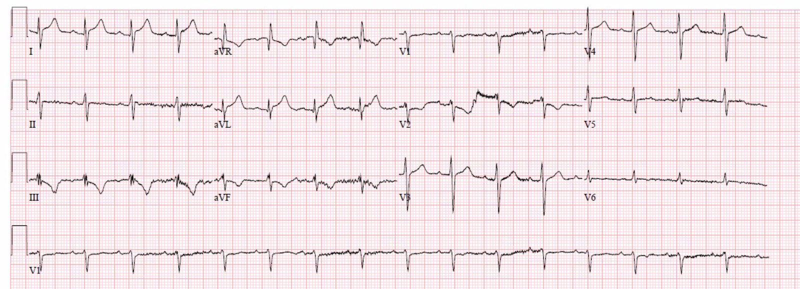
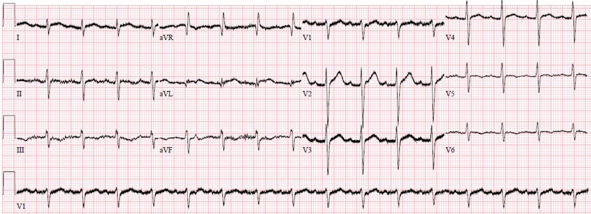
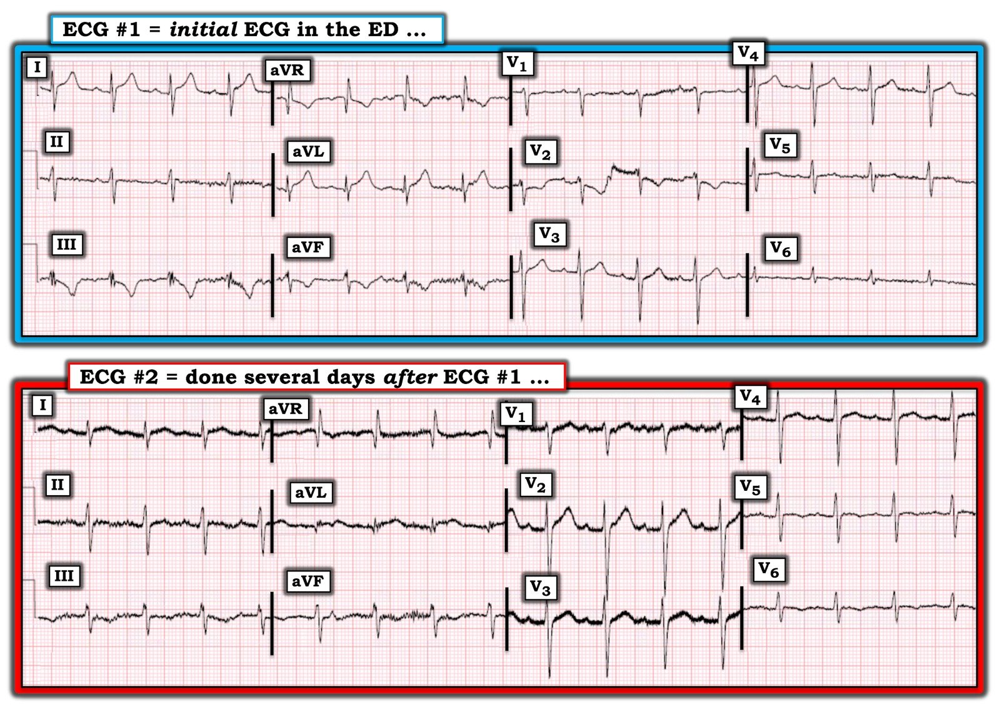

11/05/2020 — Một người đàn ông 50 mấy tuổi bị sốt và khó thở
Bản dịch tiếng Việt của bài "A man in his 50s with fever and shortness of breath" – Dr. Smith’s ECG Blog. Giữ nguyên toàn bộ 5 hình ảnh của bản gốc.
Tác giả: Pendell Meyers
Một người đàn ông 50 mấy tuổi có tăng huyết áp (HTN), rối loạn lipid máu (HLD), béo phì và bệnh phổi hạn chế, đến viện vì khó thở nặng dần trong 3 ngày qua. Ông cũng có ho và cảm giác sốt. Ông phủ nhận đau ngực. Các dấu hiệu sinh tồn trong giới hạn bình thường.
Đây là điện tâm đồ lúc phân loại (triage) của ông (không có điện tâm đồ nền):


Các dấu hiệu:
– nhịp xoang tần số khoảng 100 lần/phút
– ST chênh lên (STE) ở I và aVL (đạt tiêu chuẩn STEMI)
– gợi ý ST chênh xuống (STD) ở III và aVF
– ST chênh xuống ở V1 và V2
– sóng T tối cấp ở I và aVL (kèm sóng T tối cấp âm soi gương ở III)
Diễn giải:
Đây là bằng chứng xác định của tổn thương xuyên thành cấp và nhồi máu đang diễn ra ở thành bên và thành sau. Ở bất kỳ quần thể người lớn nào có triệu chứng có thể phù hợp với hội chứng vành cấp (ACS), nguyên nhân thường gặp nhất của thiếu máu cục bộ xuyên thành khu trú này là nhồi máu cơ tim do tắc (OMI) (ACS típ 1). Nhưng còn có các nguyên nhân khác như co thắt mạch vành, bệnh cơ tim takotsubo/bệnh cơ tim do stress (hiếm khi có dấu hiệu soi gương vì thường lan rộng), viêm cơ tim khu trú (hiếm, nhưng thường có dấu hiệu soi gương), v.v. Các tế bào của thành sau và thành bên không biết nguyên nhân của tổn thương xuyên thành, và các dấu hiệu trên điện tâm đồ là như nhau bất kể nguyên nhân là gì.
Quay lại ca bệnh:
Với các triệu chứng nhiễm trùng và hô hấp cùng việc hoàn toàn không có đau ngực, chúng tôi đã không kích hoạt phòng thông tim (cath lab) dù điện tâm đồ đạt tiêu chuẩn STEMI. Thay vào đó, chúng tôi gọi khoa tim mạch xuống hỗ trợ tại khoa cấp cứu (ED) để chắc chắn rằng họ đồng ý là bệnh nhân không cần thông tim cấp cứu. Chúng tôi cùng làm siêu âm tim tại giường (không cản âm), cho thấy phân suất tống máu (EF) giảm toàn bộ, và chúng tôi không nhận thấy được rối loạn vận động thành khu trú rõ rệt ở thành sau hay thành bên (rất hạn chế do là siêu âm tại giường và không có chất cản âm). Nếu không có rối loạn vận động thành trên siêu âm tim có cản âm chất lượng rất cao, thì ít có khả năng các dấu hiệu điện tâm đồ phản ánh OMI cấp.
Cuối cùng, khoa tim mạch quyết định không kích hoạt phòng thông tim do kết hợp giữa mức nghi ngờ lâm sàng về ACS đã giảm (vì không có đau ngực và có nhiều triệu chứng nhiễm trùng hơn) và các dấu hiệu siêu âm ban đầu. Tuy vậy, tôi nghĩ rằng việc vẫn thông tim cho ông để loại trừ chắc chắn ACS là nguyên nhân cũng hoàn toàn hợp lý, vì tác hại của một lần thông tim chẩn đoán không can thiệp là rất nhỏ so với tác hại của OMI không được điều trị.
Troponin T lần đầu có kết quả 1.34 ng/mL (tăng khá cao), và các lần đo sau là 1.29 và 1.27 ng/mL.
Siêu âm tim chính thức xác nhận giảm động lan tỏa với chức năng tâm thu giảm nặng, EF 25%. Không dùng chất cản âm, nhưng không thấy rối loạn vận động thành khu trú.
PCR Covid cho kết quả dương tính.
X-quang ngực (CXR) cũng cho thấy các đám mờ hai bên phù hợp với viêm phổi do covid.
Bệnh nhân không được thông tim.
Một điện tâm đồ ghi lại được thực hiện vài ngày sau đó:


Ngoài ra bệnh nhân có diễn biến không có gì đặc biệt và được xuất viện về nhà, có hẹn theo dõi để đánh giá chức năng tim lâu dài.
Những điểm cần học:
COVID có thể gây viêm cơ tim. Tuy nhiên, viêm cơ tim chưa được chứng minh chắc chắn trong ca này. Nếu một siêu âm tim có cản âm chất lượng cao cho thấy không có rối loạn vận động thành khu trú trong lúc có các dấu hiệu điện tâm đồ, thì chúng ta gần như có thể chắc chắn rằng ca này đúng là viêm cơ tim. Nếu không có điều đó, viêm cơ tim chỉ chắc chắn khi có sinh thiết hoặc MRI (cả hai đều không được thực hiện trong ca này). Vẫn có khả năng bệnh nhân này có nhồi máu cơ tim do tắc (OMI) thực sự (và STEMI), và đồng thời cũng tình cờ mắc COVID.
Viêm cơ tim có thể khu trú, và có thể hoàn toàn không phân biệt được với OMI trên điện tâm đồ. Mặc dù bệnh cảnh lâm sàng cực kỳ quan trọng, chỉ riêng các đặc điểm lâm sàng thì không đủ để phân biệt chắc chắn viêm cơ tim khu trú với OMI.
Không nên xem nhẹ quyết định không kích hoạt phòng thông tim cấp cứu ở một bệnh nhân khó thở, troponin tăng rất cao và có dấu hiệu OMI trên điện tâm đồ (thậm chí STEMI[+] trong ca này). Có thể lập luận rằng, ở cấp độ quần thể, điều đúng đắn là thực hiện thông tim ngay cả khi biết khả năng dương tính giả cao, vì tác hại của một ca OMI bị bỏ sót nhiều khả năng lớn hơn rất nhiều so với tác hại của nhiều lần thông tim chẩn đoán dương tính giả không can thiệp.

===================================
BÌNH LUẬN CỦA TÔI, bởi KEN GRAUER, MD (11/5/2020):
===================================
Với mức độ phổ biến của nhiễm Covid-19 — ca bệnh này của Dr. Meyers cực kỳ thời sự. Ca bệnh minh họa tuyệt vời cho việc ra quyết định lâm sàng, trong đó dù có các dấu hiệu điện tâm đồ phù hợp với STEMI cấp — quyết định (sáng suốt) được đưa ra là không tiến hành thông tim.
- Có lẽ (dù chưa được chứng minh chắc chắn) — bệnh nhân trong ca này bị viêm cơ tim cấp.
- Xin nhấn mạnh lại ĐIỂM CẦN HỌC then chốt mà Dr. Meyers đã nêu — Viêm cơ tim cấp có thể khu trú, và đôi khi có thể hoàn toàn không phân biệt được với OMI cấp trên điện tâm đồ. Việc cân nhắc các đặc điểm lâm sàng có thể giúp phân biệt giữa 2 thực thể này — nhưng ngay cả khi đó, không phải lúc nào cũng có thể chẩn đoán xác định. Khi vẫn còn nghi ngờ — có thể cần thông tim sớm để loại trừ khả năng OMI cấp.
Tôi không có nhiều điều để bổ sung cho phần bàn luận lâm sàng xuất sắc của Dr. Meyers. Tôi chỉ giới hạn bình luận ở một vài điểm “kỹ tính” bổ sung mà tôi muốn thêm về việc đọc 2 bản ghi điện tâm đồ trong ca này (Hình 1):
- Như Dr. Meyers đã nêu — điện tâm đồ #1 cho thấy nhịp xoang với tần số ngay dưới 100 lần/phút. Tất cả các khoảng đều bình thường. Tôi sẽ mô tả TRỤC mặt phẳng trán là không xác định — vì cả 6 chuyển đạo chi đều gần như đẳng điện.
- ĐIỂM THEN CHỐT (PEARL) #1 — Việc xác định trục mặt phẳng trán thường dễ — và khi có kinh nghiệm, thường có thể thực hiện trong vòng vài giây. Dù vậy — NẾU có khi nào bạn thấy mình mất hơn 2-3 giây để xác định trục mặt phẳng trán — nhiều khả năng là trục không xác định! Đó chính là trường hợp ở đây. Nhìn vào chuyển đạo I ở điện tâm đồ #1 — người ta có thể nghĩ trục lệch phải. Nhưng nhìn vào 3 chuyển đạo thành dưới — người ta có thể nghĩ có LAHB. Lý do của sự mâu thuẫn này là trục nằm ở “Vùng Vô Chủ” (No-Person’s Land) (tức là ở góc phần tư trên bên phải). (LƯU Ý: Với những ai muốn xem nhanh phần nhập môn về xác định Trục & các blốc phân nhánh — BẤM VÀO ĐÂY. Nếu bạn muốn xem Video ôn tập về Trục & các blốc phân nhánh — BẤM VÀO ĐÂY).
- ĐIỂM THEN CHỐT (PEARL) #2 — Sẽ hữu ích nếu ghi nhớ 3 Nguyên nhân thường gặp nhất của Trục Không xác định. Đó là: i) RVH; ii) Bệnh phổi mạn tính; và/hoặc, iii) Thể trạng to lớn. Về lâm sàng, trong ca này — chúng ta được biết bệnh nhân béo phì và có bệnh phổi hạn chế.


Tiếp tục Phân tích mô tả điện tâm đồ #1:
- Lớn các buồng tim — Không có. Mặc dù trục mặt phẳng trán không xác định — phần còn lại của điện tâm đồ không đặc biệt gợi ý RVH. Không có dấu hiệu bất thường nhĩ hay LVH.
- Thay đổi Q-R-S-T — Như Dr. Meyers đã nêu, có ST chênh lên kèm sóng T tối cấp ở các chuyển đạo bên cao I và aVL — kèm ST chênh xuống soi gương (hình soi gương) ở các chuyển đạo III và aVF. Cũng có điểm J chênh xuống ở các chuyển đạo V1 và V2 (như Dr. Meyers đã nêu) — với hình dạng sóng ST-T ở chuyển đạo V2 phù hợp với tổn thương thành sau cấp.
- VÌ SAO bạn nghĩ phức bộ QRS ở chuyển đạo V6 của điện tâm đồ #1 lại nhỏ đến vậy? Tôi đoán rằng điều này có thể do hoặc béo phì của bệnh nhân và/hoặc bệnh phổi mạn tính của ông. Sóng T dẹt mà chúng ta thấy ở các chuyển đạo V5, V6 không phải là dấu hiệu bình thường (Bình thường sóng T phải dương và có biên độ hợp lý ở các chuyển đạo V5,V6). Ban đầu tôi không chắc sóng ST-T dẹt ở các chuyển đạo V5, V6 là biểu hiện của thiếu máu cục bộ cấp, của thể trạng to lớn của bệnh nhân, của bệnh phổi mạn tính của ông — hay là sự kết hợp của các yếu tố này.
- NHẬN ĐỊNH lâm sàng về điện tâm đồ #1 — Như Dr. Meyers đã nêu, các dấu hiệu điện tâm đồ trên chắc chắn có thể phù hợp với OMI sau-bên cấp. Mặt khác (do không có đau ngực, khó thở nặng dần kèm xét nghiệm Covid-19 dương tính) — các dấu hiệu này nhiều khả năng biểu hiện viêm cơ tim cấp khu trú hơn.
SUY NGHĨ CỦA TÔI về điện tâm đồ #2: Bản ghi điện tâm đồ thứ 2 này được ghi vài ngày sau đó. Bệnh nhân đã cải thiện về lâm sàng — và sắp được xuất viện. Như Dr. Meyers đã nêu — “các dấu hiệu khu trú ở thành bên kém rõ rệt hơn nhiều, nhưng vẫn còn hiện diện nhẹ”. Dù vậy — ĐIỀU GÌ khiến việc so sánh các chuyển đạo ngực ở 2 bản ghi này trở nên khó khăn?
- ĐIỂM THEN CHỐT (PEARL) #3 — Theo kinh nghiệm của tôi, cách tiết kiệm thời gian nhất để so sánh các điện tâm đồ liên tiếp là: i) Trước tiên chọn 1 trong các bản ghi — và đọc trọn vẹn bản ghi đầu tiên này (như chúng ta đã làm ở trên với điện tâm đồ #1); SAU ĐÓ; ii) So sánh điện tâm đồ thứ 2 với điện tâm đồ thứ 1 — bằng cách xem từng chuyển đạo một để xem có bất kỳ thay đổi nào giữa 2 bản ghi ở chuyển đạo I — ở chuyển đạo II — ở chuyển đạo III — và ở từng chuyển đạo trong 9 chuyển đạo còn lại. Lý do việc thực hiện so sánh từng chuyển đạo một này là quan trọng — là vì nếu không, bạn có thể BỎ SÓT việc hình dạng QRS ở chuyển đạo V2 khác biệt đến thế giữa điện tâm đồ #1 và điện tâm đồ #2! Với thể trạng to lớn của bệnh nhân này — lý do nhiều khả năng nhất cho sự khác biệt rõ rệt về hình dạng QRS ở chuyển đạo V2 giữa 2 bản ghi là đặt sai vị trí điện cực của chuyển đạo ngực này trên một trong hai bản ghi. Đôi khi, việc nhận ra sự cố kỹ thuật này có thể rất quan trọng — vì cố gắng so sánh các thay đổi sóng ST-T chúng ta thấy ở điện tâm đồ #1 với những gì hiện thấy ở sóng ST-T trên điện tâm đồ #2 — cũng giống như cố gắng so sánh “táo với cam” (vì phức bộ QRS ở chuyển đạo V2 khác biệt rất nhiều giữa 2 bản ghi này …).
- NHẬN ĐỊNH lâm sàng về điện tâm đồ #2 So với điện tâm đồ #1 — Cả hai bản ghi đều cho thấy nhịp xoang với tần số ~100 lần/phút. Điện tâm đồ #2 có nhiều nhiễu hơn. Một lần nữa, tôi sẽ đọc trục mặt phẳng trán của điện tâm đồ #2 là không xác định. Tôi hoàn toàn đồng ý với Dr. Meyers — rằng các thay đổi tối cấp ở chuyển đạo bên cao và các thay đổi soi gương ở chuyển đạo thành dưới kém rõ rệt hơn nhiều so với ở điện tâm đồ #1. Và mặc dù gần như chắc chắn có một số khác biệt về vị trí đặt điện cực chuyển đạo ngực giữa 2 bản ghi — hình dạng sóng ST-T tổng thể ở các chuyển đạo ngực của điện tâm đồ #2 trông lành tính.
Xin CẢM ƠN Dr. Meyers đã trình bày một số cân nhắc lâm sàng quan trọng trong việc đọc điện tâm đồ giữa đại dịch Covid-19 hiện nay.